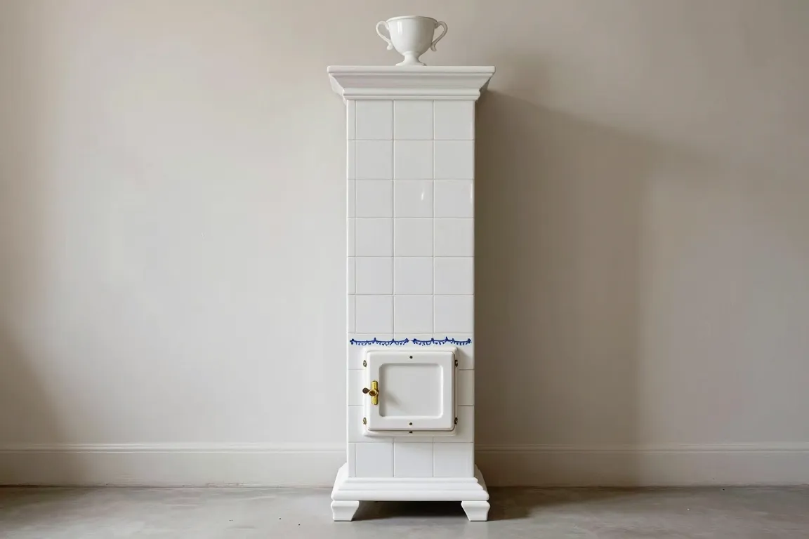

Высокая печь, облицованная белыми глазурованными изразцами, которая накапливает тепло недолгого огня дров в комнате. У шведского какелугена тонкие изразцы, простая белая лицевая сторона и мягкая рама из профилей.

Главная идея
Белая изразцовая печь — одновременно машина для тепла и предмет мебели: глазурь отражает свет тёмной северной комнаты.
Принципы дизайна
Облицовывайте кирпичное ядро плоскими глазурованными изразцами около 20 на 25 см и толщиной 15–20 мм.
Делайте печь высокой и стройной, 2–3 м, чтобы она входила в угол комнаты.
Глазуруйте изразцы простым белым; добавляйте несколько линий синей или серой росписи для декора.
Заканчивайте верх карнизом, короной или урной, а низ цоколем.
Прорезайте дымоход длинными витками по 5–8 м, чтобы кирпич копил тепло огня.
Берите небольшую железную дверцу и латунную заслонку и держите металлические части в простой форме.
Формуйте карниз и рамы из той же глины, чтобы изразцы и профили подходили друг другу.
Повторяйте неоклассические мотивы, гирлянду, урну и каннелированную колонну, низким рельефом.
Антипаттерны
Изразцы насыщенных цветов с тяжёлыми узорами
Чугунная печь с тонким изразцом на лицевой стороне